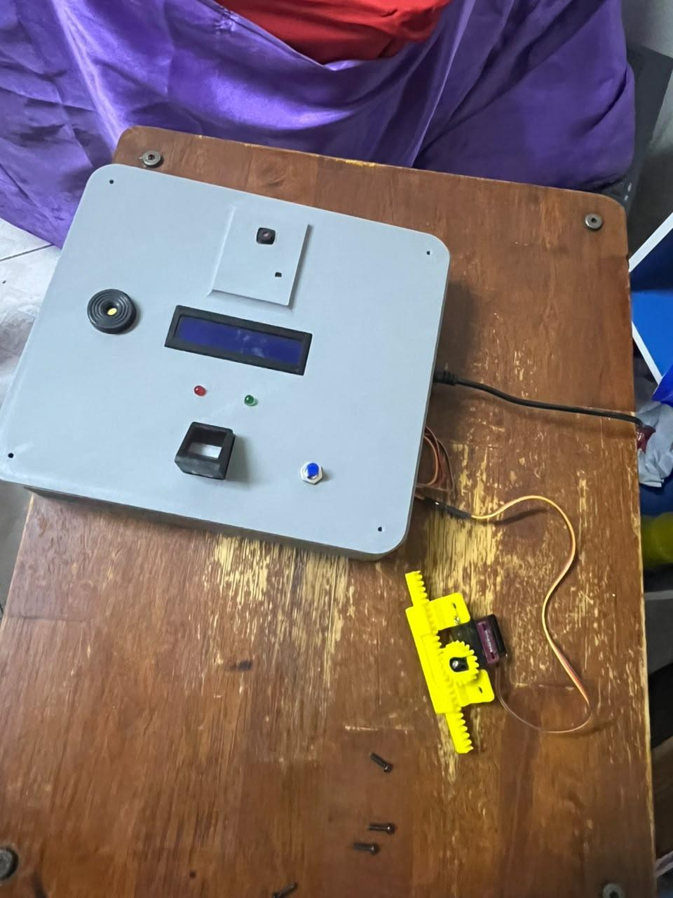

Programming
C++, Java, Python, SQL, PHP, HTML, CSS, JavaScript
Cybersecurity student · Malaysia
From biometric access control to web security testing, I turn technical ideas into practical, documented projects.
01 / About
I am a Bachelor of Computer Science (Computer Security) student at Universiti Teknikal Malaysia Melaka. My work combines cybersecurity, software development, networking, and embedded systems.
I enjoy understanding how systems behave, where they can fail, and how to make them safer and more useful.
02 / Skills
Tools and concepts I have applied through university projects and labs.
C++, Java, Python, SQL, PHP, HTML, CSS, JavaScript
Vulnerability assessment, OWASP testing, access control, secure development
Active Directory, DNS, VLAN, RADIUS, Windows Server, MySQL
Arduino, ESP32-CAM, fingerprint sensors, servos, GSM and IoT integration
03 / Projects
Practical projects with clear implementation notes and security considerations.

Final-year project · 2026Featured / 01
A biometric door-access prototype that logs authentication attempts and triggers an ESP32-CAM image capture and Telegram alert after three consecutive failures.
C++ · MySQL
Web security
Windows Server
04 / Contact
I’m developing my portfolio for internship and graduate opportunities in cybersecurity and software development.
Connect on GitHub